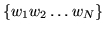
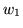
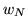
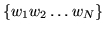
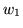
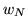

Statistical language models are estimated by counting the number of events in a sample source text. These event counts are stored in gram files. Provided that they share a common word map, gram files can be grouped together in arbitrary ways to form the raw data pool from which a language model can be constructed. For example, a text source containing 100m words could be processed and stored as two gram files. A few months later, a 3rd gram file could be generated from a newly acquired text source. This new gram file could then be added to the original two files to build a new language model. The original source text is not needed and the gram files need not be changed.
A gram file consists of a header followed by a
sorted list of  -gram counts. The header
contains the following items, each written on a separate line
-gram counts. The header
contains the following items, each written on a separate line
Ngram = 3
WMap = US_Business_News
Entries = 50345980
WMCheck = XEROX 340987
Gram1 = AN ABLE ART
GramN = ZEALOUS ZOO OWNERS
Source = WSJ Aug 94 to Dec 94
The  -grams themselves begin immediately following the line containing
the keyword
-grams themselves begin immediately following the line containing
the keyword \Grams\16.1. They are
listed in lexicographic sort order such that for the  -gram
,  varies the least rapidly and  varies the
most rapidly. Each
-gram
,  varies the least rapidly and  varies the
most rapidly. Each  -gram consists of a sequence of
-gram consists of a sequence of  3-byte word
ids followed by a single 1-byte count. If the
3-byte word
ids followed by a single 1-byte count. If the  -gram occurred more
than 255 times, then it is repeated with the counts being interpreted
to the base 256. For example, if a gram file contains the
sequence
-gram occurred more
than 255 times, then it is repeated with the counts being interpreted
to the base 256. For example, if a gram file contains the
sequence
w1 w2 ... wN c1
w1 w2 ... wN c2
w1 w2 ... wN c3
corresponding to the
When a group of gram files are used as input to a tool, they
must be organised so that the tool receives  -grams as a single stream
in sort order i.e. as far as the tool is concerned, the net effect
must be as if there is just a single gram file. Of course, a sufficient approach would be to open all input gram
files in parallel and then scan them as needed to extract the required
sorted
-grams as a single stream
in sort order i.e. as far as the tool is concerned, the net effect
must be as if there is just a single gram file. Of course, a sufficient approach would be to open all input gram
files in parallel and then scan them as needed to extract the required
sorted  -gram sequence. However, if two
-gram sequence. However, if two  -gram files were organised
such that the last
-gram files were organised
such that the last  -gram in one file was ordered before the first
-gram in one file was ordered before the first
 -gram of the second file, it would be much more efficient to open and
read the files in sequence. Files such as these are said to be
sequenced and in general, HTK tools are supplied with a mix
of sequenced and non-sequenced files. To optimise input in this
general case, all HTK tools which input gram files start by scanning
the header fields gram1 and
gramN. This information allows a sequence table to be
constructed which determines the order in which the constituent gram
file must be opened and closed. This sequence table is designed to
minimise the number of individual gram files which must be kept open
in parallel.
-gram of the second file, it would be much more efficient to open and
read the files in sequence. Files such as these are said to be
sequenced and in general, HTK tools are supplied with a mix
of sequenced and non-sequenced files. To optimise input in this
general case, all HTK tools which input gram files start by scanning
the header fields gram1 and
gramN. This information allows a sequence table to be
constructed which determines the order in which the constituent gram
file must be opened and closed. This sequence table is designed to
minimise the number of individual gram files which must be kept open
in parallel.
This gram file sequencing is invisible to the HTK user, but it is important to be aware of it. When a large number of gram files are accumulated to form a frequently used database, it may be worth copying the gram files using LGCOPY. This will have the effect of transforming the gram files into a fully sequenced set thus ensuring that subsequent reading of the data is maximally efficient.